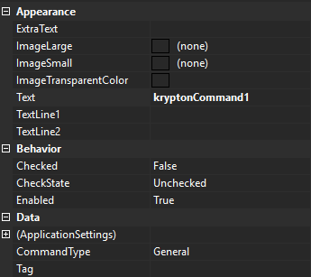

KryptonCommand
Use the KryptonCommand component to simplify the management of application actions.
For example, you could use a KryptonCommand instance to manage the state of your applications Print action. Your application might have three separate places where feedback is provided to the user about the availability of the Print capability. Instead of updating all three controls each time the Print state changes you only need to update the single command. The three attached controls will then be updated automatically. Just assign the command instance to the KryptonCommand property of any compatible control and the control will automatically keep itself in sync with the command state.
The command also exposes an event called Execute that you should hook into for notification of when the command needs to be executed. When the user presses a button that is attached to a command the button will cause the Execute event to be fired. So management of your Print action could not be easier. Just attach the command to your KryptonButton, KryptonCheckButton, ButtonSpec, KryptonRibbon element etc and those controls will automatically show the correct command state for you. Then when the user presses the KryptonButton, ButtonSpec etc the Execute event will fire so you can process the Print request.
KryptonCommand properties
Figure 1 shows the list of properties exposed by the KryptonCommand component.

Figure 1 - KryptonCommand properties
ExtraText
This is the supplementary text used by attached controls for display.
ImageLarge and ImageSmall
Most attached controls will use the ImageSmall property value but the KryptonRibbon elements sometimes require a large image, in which case the ImageLarge property will be used instead.
ImageTransparentColor
Transparent colour applied when drawing ImageSmall / ImageLarge.
CommandType
CommandType selects a built-in button-spec role. When set to anything other than General, the command automatically configures default text and palette images for that role and can synchronize an assigned ButtonSpec.
var helpCommand = new KryptonCommand
{
CommandType = KryptonCommandType.HelpCommand
};
// Text and ImageSmall are populated from the active palette's button-spec images
KryptonCommandType values
| Value | Typical use |
|---|---|
General |
Default — no automatic button-spec mapping |
HelpCommand |
Help button spec |
IntegratedToolBarCopyCommand |
Integrated toolbar Copy |
IntegratedToolBarCutCommand |
Integrated toolbar Cut |
IntegratedToolBarNewCommand |
Integrated toolbar New |
IntegratedToolBarOpenCommand |
Integrated toolbar Open |
IntegratedToolBarPageSetupCommand |
Integrated toolbar Page Setup |
IntegratedToolBarPasteCommand |
Integrated toolbar Paste |
IntegratedToolBarPrintCommand |
Integrated toolbar Print |
IntegratedToolBarPrintPreviewCommand |
Integrated toolbar Print Preview |
IntegratedToolBarQuickPrintCommand |
Integrated toolbar Quick Print |
IntegratedToolBarRedoCommand |
Integrated toolbar Redo |
IntegratedToolBarSaveAllCommand |
Integrated toolbar Save All |
IntegratedToolBarSaveAsCommand |
Integrated toolbar Save As |
IntegratedToolBarSaveCommand |
Integrated toolbar Save |
IntegratedToolBarUndoCommand |
Integrated toolbar Undo |
AssignedButtonSpec
When CommandType is not General, assign a ButtonSpecAny to AssignedButtonSpec to keep its Type, images, and KryptonCommand link synchronized with the command:
helpCommand.AssignedButtonSpec = myHeaderHelpButtonSpec;
Palette changes trigger automatic image refresh for non-General command types.
Implements #1133. Prefer CommandType over obsolete per-button toolbar command component types on KryptonIntegratedToolBarManager.
Text
This is the main text used by attached controls for display.
TextLine1 and TextLine2
These two text values are for use by KryptonRibbon elements that require two display strings. When a KryptonRibbon button is displayed inside a group in large format it draws the two lines of text as provided by these properties.
Checked and CheckState
Some attached controls can provide checked state feedback. So if you attached a KryptonCheckButton to this command it will be able to display correctly the Checked property value which is a boolean type. But it will not display the CheckState value because the KryptonCheckButton has no way to indicate an indeterminate state. If you attach a KryptonCheckBox then the CheckState property would be used. If the attached control cannot provide checked information, such as a KryptonButton, then these properties would be ignored by that attached control.
Enabled
Determines if the command should be enabled or disabled for use. When disabled, any attached controls will show themselves as disabled in order to prevent the command from being executed.
Tag
Use the Tag to assign your application specific information with the component instance.